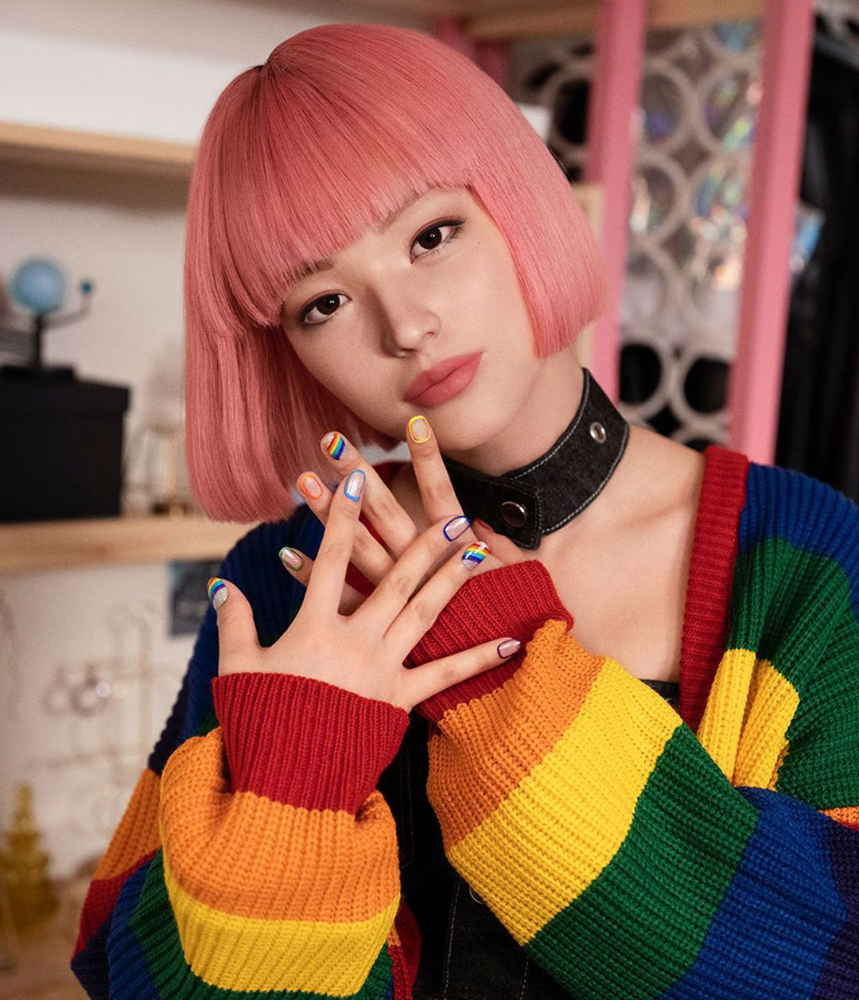
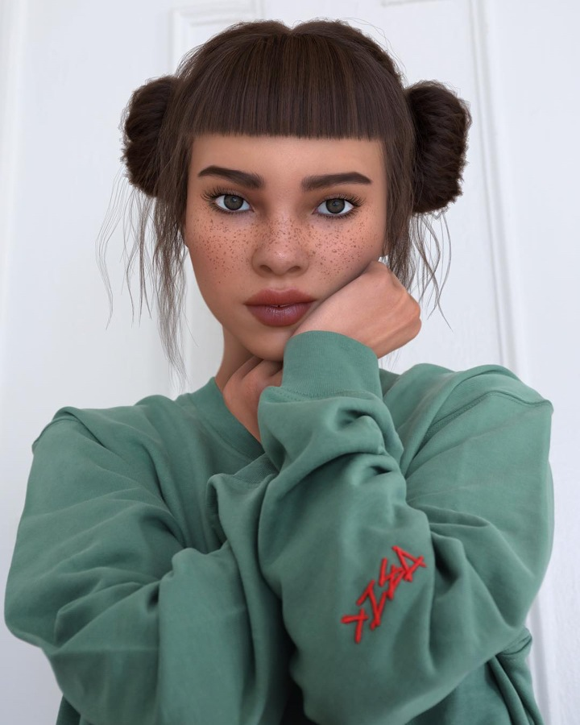
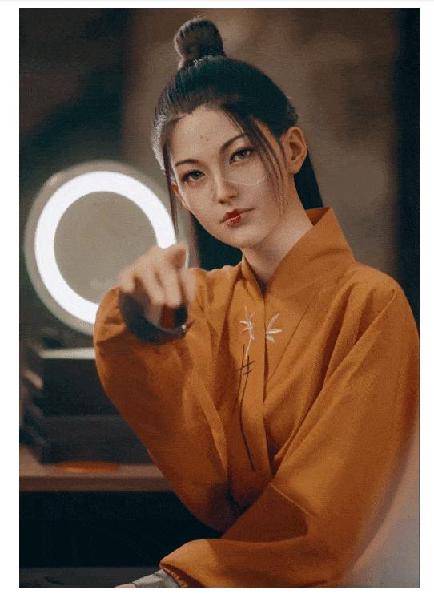

面向 FlexiSpot 原创虚拟创作者（AI Virtual Creator）的赛制拆解、行业与案例研究、2026 年全流程工具链可行性、合规标注、风险与竞赛策略——一份可直接用于团队策略讨论与 Proposal 落地的作战地图。
先给结论：本课题在三个赛题中差异化空间最大、技术门槛在 2026 年已被工具大幅抹平、且透明标注是评审一票否决项——以下为全报告核心判断与章节目录。
课题二是三个赛题中差异化空间最大、与企业战略契合度最高的方向。2026 年的 AI 工具链已让"一个固定虚拟角色在多场景中保持一致"从技术难题变成两周可跑通的标准流程；真正决定成败的不是炫技，而是角色辨识度、内容真实感、品牌自然植入与透明标注——透明标注在乐歌赛事体系中是一票否决项。
先用"即梦/Seedream + Seedance + ElevenLabs + CapCut"两周跑通 3 条能看的片子，再用 Midjourney / 可灵 / Veo 升级高光镜头；以"半写实、强视觉锤、生活流 vlog"的人设占位，用"双法规 + 全平台"的透明标注方案守住底线，用"长期 IP + AI Agent 互动"的想象空间拉高答辩上限。
读懂这场比赛要先读懂出题的人：一家利润承压、91% 收入靠海外、正从"卖产品"走向"卖生活方式"的上市公司，和一所三冠认证、同时要理论框架与落地性的商学院。
乐歌人体工学科技股份有限公司（前身宁波丽晶时代电子线缆有限公司）成立于 2002 年、总部位于浙江宁波，2017 年 12 月在深交所创业板上市（300729），自称"大健康人体工学行业首家 A 股上市公司"与"通过 IPO 上市的跨境电商第一股"，创始人为项乐宏。公司以"机、电、软一体化的线性驱动"为核心技术，产品覆盖升降桌、人体工学椅、电动床、显示器支架，并叠加公共海外仓跨境物流服务，呈现"产品销售 + 跨境服务"双轮结构。
关键张力在于：公司营收仍在增长，但归母净利润已连续两年下滑——2024 年 56.70 亿元营收同比 +45.33%，净利却同比 -46.99%；2025 年营收 67.15 亿元，净利进一步降至 2.59 亿元；2026 年上半年归母净利仅 0.21 亿元、同比 -83.43%。利润压力主要来自海外仓大扩张的折旧与财务费用、以及中美关税不确定性。
| 报告期 | 营业收入 | 营收同比 | 归母净利润 | 净利同比 | 口径来源 |
|---|---|---|---|---|---|
| 2023 年报 | 39.02 亿 | — | 6.34 亿 | — | 年报 |
| 2024 年报 | 56.70 亿 | +45.33% | 3.36 亿 | -46.99% | 21 财经 / 年报 |
| 2025 年报 | 67.15 亿 | +18.41% | 2.59 亿 | -22.75% | 年度董事会工作报告 |
| 2026 半年报 | 31.79 亿 | +1.11% | 0.21 亿 | -83.43% | 公开财经数据（半年报口径） |
企业处在"利润承压、但品牌投入不敢收缩"的阶段，这恰好解释了办赛动机：用较低成本换取真实营销创意与年轻人才注意力。我们的方案若能让企业看到"低成本、可复用、可落地"的内容资产，比单纯炫技更能打动评审。
乐歌 2011 年起绕过海外品牌商、通过亚马逊直接面向消费者，2016 年推出自有品牌 FlexiSpot 并上线 flexispot.com 独立站。2024 年境外销售收入 35.98 亿元、占营收 91.33%，美国是最大区域。2025 年亚马逊渠道收入 11.27 亿元、独立站收入 9.31 亿元，且独立站增速约为亚马逊的 3 倍，是当前明确的战略重心。
市场地位上，第三方报告 MarketPublishers 显示全球升降桌前三制造商为 Loctek、Steelcase、Herman Miller，Loctek 以约 5% 份额居首；企业官方口径为"国内第一、全球第二"。这意味着乐歌在产销端是龙头，在全球品牌端却直接面对 Steelcase、Herman Miller、Vari、Uplift 等强敌——FlexiSpot 迫切需要"品牌感"而非"性价比白牌感"，这正是虚拟创作者企划的战略落点。
宁波诺丁汉大学是中国第一所经教育部批准的中外合作大学，全英文授课；诺丁汉大学商学院（中国）拥有 AACSB、EQUIS、AMBA "三冠认证"（全球获此认证的商学院不到 1%），并设有诺丁汉全球案例中心（NGCC）与 NEXT 电商直播实验基地。
乐歌与 UNNC 的合作已持续四年：2022 年起设立创新创业奖励基金，2023 年项乐宏受聘为荣誉教授，2025、2026 年连续举办两届"智创乐歌"校园创新设计大赛——但此前合作都走理工学院技术线，本次由商学院主办、以海外营销为主题的赛事在公开渠道查不到往届记录，很可能是首届（详见第 2 章信息缺口）。
三冠认证意味着评审大概率含学术派教授，他们会看"理论框架是否规范（STP、受众画像、品牌定位）"；同时企业市场部与海外社媒运营会看"方案拿回去能不能直接用"。这与纯企业命题、只看老板喜好的比赛不同——我们的方案必须理论框架与可执行性兼备。
乐歌校企合作已 19 年、累计受益学生超 2000 名；商赛是长期人才投资的"升级版"，获奖往往意味着实习直通车。
2025 年销售费用 9.69 亿元；利润承压期把营销 brainstorming 交给学生，性价比远高于纯广告投放。
Kana 卧室线、Nest 客厅线正在爬坡，需要大量"生活场景"内容；三个课题分别覆盖内容、IP、线下三战线。
官方 TikTok 仅约 8 万粉、与 DTC 头部品牌差距明显，需要新的内容形态破圈、触达 Gen Z。
教育公益已持续 20 年，办赛呼应宁波"外贸出海"城市战略，延续长期 CSR 叙事。
评审底色是"场景化、接地气、反感硬广"。方案要像真实博主一样生活，而非把产品当道具硬塞。
| 维度 | 课题一 · AI 短视频广告 | 课题二 · AI 虚拟创作者（已选） | 课题三 · 洛杉矶线下活动 |
|---|---|---|---|
| 难度 | 中。创意有成熟模板，容易"工整"但难出挑 | 中高。需同时搞定角色、内容、标注三线，但边界清晰 | 高。场地、物流、邀约、应急，学生无实操经验 |
| 工作量 | 小-中：3–5 条分镜即可 | 中：角色文档 + 3 条脚本 + 标注，体系化 | 大：方案 + 预算 + 引流，约为课题二的 1.5–2 倍 |
| 技术门槛 | 低。现成 AI 剪辑工具，评委已看多 | 中。需角色一致性工具链与标注意识，无需写代码 | 低。门槛不在工具而在资源真实度 |
| 评审偏好 | 易被拿来与官方 TikTok 比，显得"又一条普通广告" | 契合 New Living 空白区 + 踩中 AI 透明化新红线 | 企业会用真实线下 ROI 拷问，信任成本最高 |
| 主要风险 | 同质化——都在做"升降桌改变生活" | 角色不独特、植入生硬、标注模糊，任一被击中即出局 | 异地细节经不起追问，易被"你真办过吗"击穿 |
| 差异化机会 | 中 | 高（无往届、赛道新、合规叙事稀缺） | 中（吸睛但易翻车） |
与 New Living 战略高度契合；可复用真实居家场景；赛道空白、无往届套路；可全程 AI 产出、成本可控；与现有"真人达人+体育明星"矩阵明确互补。
团队无虚拟人运营经验；角色一致性与视频废片率有学习成本；6 项交付物体系复杂；比赛期内无法靠真实粉丝数据验证效果。
海外家居/升降桌品类无标志性虚拟人；2026 工具红利（Sora 2 / Veo 3 / 可灵 3）；监管对主动披露者友好；独立站是天然的流量承接与转化阵地。
对手可能同样选择虚拟人造成同质化；平台对 AI 账号政策趋严、限流风险；64% 受众对 AI 误导零容忍；翻车案例会让评审对虚拟人更警惕。
先摸清出题人的历史牌面：乐歌与宁波诺丁汉的合作已有四年，但此前全部走理工学院技术线；商学院营销赛公开渠道查无往届——我们既是参赛者，也可能是这个赛道的第一批规则定义者。
2022 年度资助 91 名学生参与开放课题、10 余位教师参与、10 余项科研合作、40 余个实习岗位——校企合作从"发钱"升级为"课题制"。来源：乐歌官网新闻。
由 UNNC 理工学院主办，主题"线性驱动技术的跨场景应用"，覆盖智能家居、办公、建筑、宠物四领域，12 支队伍、53 名学生获奖，英国/中国/马来西亚三校同台。来源：UNNC 新闻。
仍由理工学院与乐歌合办，聚焦"线性驱动技术智能化创新应用场景"。关键规则原文："使用 AI 辅助的过程必须在海报文件 PDF 中以单独一页详细说明，包括 AI 工具名称、提示词以及描述指令等。否则，投稿作品将失去评奖资格。"——透明标注在乐歌赛事体系里是一票否决项。来源：UNNC 活动页。
以"乐歌 商赛""乐歌杯""FlexiSpot 商赛""诺丁汉 乐歌 案例大赛""Loctek case competition""UNNC FlexiSpot"等关键词多轮检索百度、学校官网与乐歌官网后，未发现由商学院主办的营销类商业案例大赛往届记录；本次赛事的官方招募推文、赛制时间轴、奖金设置、评审名单在公开网络上同样未检索到（截至 2026-10-15）。可能原因：(a) 赛事处于早期招募阶段、公告仅在校内渠道分发；(b) 往届合作均走理工学院技术线，商学院线是新开的；(c) 乐歌宣传预算重海外轻国内校园。含义：没有往届获奖作品可模仿，反而是机会——谁先把"虚拟创作者 + 透明标注"做成范式，谁就是规则定义者。
| 合作形式 | 对象 | 时间 / 规模 | 来源 |
|---|---|---|---|
| 奖学金 / 奖教金 | 宁波大学、宁波工程学院、浙大宁波理工学院、宁波诺丁汉大学等 | 2006 年起 20 年，累计 2000+ 学生受益，年均约 200 万元 | 乐歌官网 |
| 创新创业奖励基金 | 宁波诺丁汉大学 | 2022 年起，91 名学生开放课题、40+ 实习岗 | 乐歌官网 |
| 联合研发中心 | 浙江大学软件学院（跨境智慧联合研发中心） | 2025 年可持续发展报告披露 | 公司报告 |
| 创新设计大赛 | UNNC 理工学院（英/中/马三校） | 2025 首届、2026 第二届"智创乐歌" | UNNC 官网（见 2.1） |
| 荣誉教授 / 讲座 | 项乐宏受聘 UNNC 荣誉教授并演讲 | 2023 年 4 月 | 乐歌公司新闻 |
| 管理培训生校招 | 全国高校 | 2025 届 MT 项目，"1V1 带教 + 轮岗" | 2025 可持续发展报告 |
推断：乐歌的高校合作一贯"重育人、重长期、重宁波本地高校网络"，本次商赛大概率延续这种风格——强调学生成长、实习直通车，而非一次性比赛。
| 营销动作 | 事实 | 来源 |
|---|---|---|
| 海外社媒矩阵 | TikTok / Facebook / X / YouTube / Instagram / Pinterest 全阵地；日本站另设独立 Ins 与 YouTube；长期运营 Reddit、Discord 自建社群 | 出海网、PR TIMES |
| 网红 / UGC | Rizzi & Rizzi 六次合作（360 万播放）；日本站 2024 年发起"官方配信者招募"，开放四平台达人申请——已在做半官方达人池 | 官方案例页、PR TIMES |
| 体育与线下 | 勒沃库森 24/25 官方合作伙伴；东京/伦敦/荷兰地铁与商超广告；参展 Orgatec Tokyo 2023 | 项乐宏新年致辞 |
FlexiSpot 现有网红策略 = 腰部真人达人铺量 + 一位体育明星背书。虚拟创作者恰好补齐中间层：24 小时在线、成本可控、不闹出公关事故，且官方 TikTok 仅 8 万粉的现状，决定了品牌对"新内容形态破圈"有真实饥渴。
| 赛事 | 2025—2026 关键玩法 | 与本课题的对照点 | 来源 |
|---|---|---|---|
| 欧莱雅 Brandstorm 2026 | 与 L'Oréal Luxe 合作"用技术打造奢侈品香水未来"，明确要求整合生成式 AI；全球 64 国 38 万学生；3 人组 + 幻灯片 + 3 分钟团队视频；官方规则写明"允许 AI 辅助初筛，终审一定由人类评审团做出" | AI 不再是禁忌而是赛题本身；交付物强制视频化；AI 透明度立场明确 | 欧莱雅官网 |
| 宝洁 CEO Challenge / PEAKathon | 题目直接来自宝洁真实品牌业务；全球总决赛晋级者获实习/全职快速通道；案例测试含 16 道数据分析题 + 2 道 250 词短文；印度区三轮制（闯关 → 一页纸方案 → 孟买领导层答辩） | 奖励即 Offer；评审就是业务线高管，方案必须一页纸讲清 | P&G Careers |
| 汇丰 × 港大亚太案例赛 | 号称全球最大本科商业案例赛；2025 案例为"设计汇丰亚洲供应链多元化采购框架"，新增 Boardroom Challenge 辩论环节；冠军 RMIT 越南国际大学 | "答辩 + 辩论"比重上升，重视文化洞察与临场应变 | HKU Business School |
| 华为 ICT / 软件精英挑战赛 | 2025—2026 全球总决赛把"AI 与智能体应用开发"纳入编程赛道；软件精英赛累计 1000+ 高校、25 万+ 学生，2000+ 人通过大赛入职华为 | 技术型企业办赛核心目的是"精准筛人"，赛题即岗位能力测试 | 华为官网 |
赛题写了 6 项交付物与 4 条评审标准。把它们展开成 24 格评审桌，逐格回答"评审想看到什么、什么会扣分、什么能拿高分"——这是我们方案排布的作战图。
四列评审标准中，"透明标注清晰"贯穿全部 6 个交付物——它不是第⑥项的私事，而是每格都要交卷的底线分；而"角色辨识度"与"品牌植入自然"才是拉开差距的高分区，值得把最多打磨时间压在第①③④项交付物上。
这是营销行业增速最快的细分赛道之一：2025 年全球虚拟网红营销约 112 亿美元，预计 2030 年逼近 460 亿；虚拟人平均互动率是同量级真人的约 3 倍——但信任度仍是短板。
世界观、人设、视觉锤。海外 Brud（Lil Miquela）、Aww Inc.（Imma）；中国燃麦科技（AYAYI）、次世文化（柳夜熙）。
超写实 CG / AI 图生图。Unreal、MetaHuman、Midjourney；魔珐 Xmov、世优科技。
动捕 + 实时渲染 + AI 对话。HeyGen、Synthesia；小冰、火山引擎数字人。
脚本、发布节奏、互动。The Diigitals、Magalu 自营；无忧传媒、遥望科技。
TikTok / Instagram Reels / YouTube Shorts——本次赛题指定三平台。
单帖赞助、年度大使、联名、直播带货、数字员工、IP 演出。
2025 年后 Sora 2 / Veo 3 / 可灵 3 / 即梦把环节 2、3 的门槛降到接近为零：传统 CGI 工作室重模式（Brud、Aww）正在被"小团队 + AI 工具"轻模式挑战——FlexiSpot 作为新进入者反而享受工具红利。来源：36 氪 AI 原生频道报道。
| 平台 | 对 AI / 虚拟人账号的态度 | 合规要点 |
|---|---|---|
| TikTok | 允许，但强制标注 | 2024 年 5 月起 AIGC Label Policy：AI 生成或显著修改的写实视频必须上传时用内置开关标注，下方出现"AI-generated"角标；未标注会被限流或删除；支持 C2PA 元数据自动识别。来源：TikTok Newsroom |
| 允许，走"Made with AI"标注 | Reels 是虚拟人爆款主战场，虚拟人账号互动率显著高于真人；写实合成人物要求标注、执行弱于 TikTok。 | |
| YouTube Shorts | 允许，要求"material alteration"披露 | Shorts 是 2025—2026 年 AIGC 批量账号新蓝海；YouTube 已直接集成 Google Veo 生成 Shorts。 |
海外以 TikTok + Instagram Reels + YouTube Shorts 为核心分发战场；所有写实 AI 内容必须主动标注"AI-generated"，否则被平台限流。反过来——诚实标注的虚拟人账号在 Z 世代中信任度更高，标注是卖点不是负担。
| 虚拟人 | 商业数据 | 合作品牌 / 模式 | 来源 |
|---|---|---|---|
| Lil Miquela（美） | 单帖 8,000–10,000 美元；团队年入估约 1,000 万美元 | Prada、Dior、Calvin Klein、BMW、Samsung 等 90+ 品牌；观点表达 + 生活流内容 | Avatar Factory |
| Lu do Magalu（巴西） | 2024 年 74 条赞助帖收入约 250 万美元，约为普通人类创作者年收入 40 倍 | Magazine Luiza 自营品牌大使，直接为电商导流，连接 2500 万用户 | SQ Magazine |
| Rozy（韩） | 签约 100+ 品牌，广告收入约 10 亿韩元（≈ 85.4 万美元） | Calvin Klein、Maison Margiela、Tiffany、Chevrolet、Shinhan Life；传统娱乐公司造星体系 | Built In |
| Aitana Lopez（西） | 月收入 4,000–50,000 美元（各媒体口径差异大） | The Clueless 代理，健身 + 游戏 + 时尚人设，Fanvue 订阅变现 | Pulptastic |
Oakgen 2025 综述指出：时尚、美妆、消费电子品类中 AI 虚拟人转化率已可与真人 micro-influencer 持平；金融、医疗等高信任品类仍偏弱——人体工学家居正好落在虚拟人擅长区间。且公开检索中，海外家居 / 办公家具 DTC 品牌（Wayfair、UPLIFT Desk 等）尚未出现标志性虚拟人案例，FlexiSpot 有机会抢占"第一个做虚拟人的升降桌品牌"心智。
全球虚拟人已走过十年：鼻祖 Lil Miquela、亚洲 CG 标杆 Imma、零售商自营 IP Lu、中国特效大片路线柳夜熙。其中 Imma × IKEA 原宿是与本课题品类最贴近的一战——值得单独精读。

Imma × IKEA Harajuku 被 Taylor & Francis 2026 年学术论文《Virtual influencer-brand collaborations: a multiple-case study》列为"高形式真实感 → 实物产品背书"的范式案例（论文链接）。复刻路径：让虚拟人"坐"在 FlexiSpot 升降桌前办公、"躺"在 Kana 卧室床上醒来、在 Nest 客厅里做瑜伽——用虚拟人把产品放进生活场景，而不是把产品当广告位。Imma 的标志性粉色波波头就是可复用的"视觉锤"打法。

Instagram 约 260 万粉；19 岁洛杉矶混血女孩人设，关心社会议题。合作 Prada、Dior、Calvin Klein（与 Bella Hadid 同框）、BMW、Samsung。
Instagram 约 38.1 万粉；粉色波波头东京女孩。合作 IKEA 原宿、SK-II、Puma、Porsche、Valentino、Fendi、Dior。
Facebook 1400 万 / TikTok 730 万 / Instagram 710 万粉；巴西邻家女孩品牌大使，本质是零售商吉祥物。2024 年 74 条赞助帖收入约 250 万美元。
2D 卡通风时尚虚拟人，Instagram 约百万粉；合作 Dior、Valentino、Prada、Marc Jacobs、Skims。2023 年签约华纳音乐做 AI 音乐人后翻车。
超写实银发"御姐"，肌肤质感接近真人；小红书首发即刷屏。合作奢侈品开业站台、Coca-Cola China 2024—2025 campaign、麦德龙。

抖音 864 万+ 粉，首发视频点赞 360 万；会"捉妖"的虚拟美妆达人，东方奇幻世界观。合作小鹏、VIVO、娇韵诗、安踏等 200+ 品牌。
VOCALOID 虚拟歌手，灰色短发少女；2025 年"无限共鸣"全息巡演北京国家体育馆副馆首站门票 30 秒售罄，成都 / 广州 / 上海接力。
5 人虚拟偶像女团，B 站直播起家；2022 年"510 珈乐事件"中之人高强度工作、薪资不透明被曝光，粉丝爆炸、人民网介入。
虚拟人走进实体门店做逛店 vlog，被学术论文列为"虚拟人代言实物产品"范式。对应 FlexiSpot：让角色桌前办公、Kana 床上醒来、Nest 客厅瑜伽。
2024 年 5 月 IKEA 西班牙在 live shopping 直播中引入 AI 虚拟主播 LAIA，辅助两位真人主播介绍产品；2025 年 4 月已做到第 50 场，在 IKEA 官网 + TikTok + Facebook 同步直播。启示：虚拟人不一定是"网红"，也可以是品牌直播助手——FlexiSpot 在北美 TikTok Shop / Amazon Live 可直接借鉴。来源：IKEA 西班牙 Newsroom
齐脖短发邻家女孩，记录日常生活；合作钟薛高、雅迪、奇瑞、小米、OPPO、花点时间、京东手机 × OPPO Find N 数字推荐官。启示：FlexiSpot 虚拟人应该是"生活流 vlog"而不是"时尚大片流"——产品是日用家居不是奢侈品，品牌植入要像朋友推荐。来源：腾讯网
2023 年 8 月 Noonoouri 签约华纳音乐德国成为"首位 AI 音乐人"，9 月单曲 MV 被舆论批评"把一个看起来像 12 岁女孩的角色性化"，华纳被骂"creepy"。对本课题：居家 / 运动内容避免擦边，形象年龄感要明确。来源：UNILAD。
成员珈乐因身体 / 学业原因"休眠"，背后中之人被曝高强度工作、PUA、薪资不透明，B 站粉丝爆炸、人民网深度报道、品牌方观望。对本课题：我们的虚拟人走纯 AI 驱动路线、不依赖任何幕后真人，并在设定文档中写明这一结构优势。来源：人民网。
法国 AI 网红 Jessica Foster 2025 年 12 月上线，4 个月破 100 万粉，但被曝完全由 AI 生成、一直假装真人，拆穿后信任崩塌。对本课题：必须主动标注 AI-generated——这既是 FTC 与三大平台的硬性要求，也是第⑥项交付物"透明标注方案"的立论根基：诚实标注的虚拟人账号在 Z 世代中信任度反而更高。来源：AutoIA。
本章回答评审最关心的三个问题：商科学生到底能不能做？用什么工具串起来？要花多少钱、多少周？结论是——2026 年 10 月，"同一个虚拟人跨镜头长得一样"已经从硬核工程问题变成"选对工具 + 冻结一张参考图"的标准流程；最大真实成本不是订阅费，而是废片率。
整条流水线的"生命线"在第 2 步——冻结一张标准参考图：此后所有图生视频、对口型、场景扩展都以这同一张脸为锚点，绝不每张图重新抽脸。下面 7 步按一条 45 秒成片拆解。
年龄、穿搭、性格、口头禅、居家场景调性，写成 1 页人设卡。
用多图参考能力生成 5–10 张候选定妆照，团队评审锁定正面标准脸，后续全部复用。
以标准图为参考，扩展侧面、半身、表情变体；按分镜生成升降桌前 / 瑜伽垫上 / 卧室等关键帧静图。
表演型镜头（走动、调桌、拉伸）用图生视频；正面口播开场用数字人。每镜头出 3–5 条挑 1 条。
先出英文旁白音频，再驱动口型对齐；不做真人声音克隆（肖像权风险）。
粗剪、自动字幕、音效、调色；统一导出 9:16 / 1080p / 30fps，文字避开平台安全区。
视频内全程 AI 水印 + caption 第一行披露 + 平台 AI 开关与商业合作勾选（详见第 7 章）。
虚拟形象的视觉资产包括 1 张标准人设正面照、3–5 张多角度定妆照、若干张居家场景生活照。核心要求是同一个角色在所有图里长得一样。2026 年 7 月 24 日起，Midjourney V8.2 成为默认版本，其全新 Edit Model（2026-08-27 全面开放）已取代旧版 --cref、Omni Reference 与 Retexture——网上大量教程仍在教的 --cref [图片URL] 参数在 V8 默认流程下已不是主推方式。
| 工具 | 角色一致性机制 | 价格 | 上手难度（1-5） | 中文友好 | 商用授权 | 本团队定位 |
|---|---|---|---|---|---|---|
| Midjourney V8.2 | 最多 4 图参考 + Personalization 私人定制人；Edit Model 取代 --cref | $10–120/月 | 3/5 | 差（英文提示词） | Basic 起个人用；企业年营收超 $1M 需 Pro | 进阶：形象精修 |
| 即梦 / Seedream 4.0 | 多图参考主体特征保持；统一架构文生图/图生图/编辑；支持 4K | API ¥0.2/张；会员约 ¥55/月起 | 2/5 | 极好（原生中文） | 会员可用 | MVP 主力 |
| Nano Banana Pro（Gemini 3 Pro Image） | 官方最强"多图拼脸"：最多 14 张参考图、同时保持 5 个人物一致 | $0.14–0.24/张；或 Gemini 订阅约 $20/月起 | 2/5 | 一般 | 商用 | 进阶：主角定妆照精修 |
| Flux 2 / 3（Kontext） | Kontext 多图编辑；身份保持 2026 年已被 Seedream 反超 | $0.012–0.07/百万像素 | 4/5 | 差 | 按模型授权 | ComfyUI 进阶可选 |
| SDXL / SD3.5 本地 | LoRA 训练（15–30 张图，最稳）+ IP-Adapter / InstantID / ControlNet | 本地免费；云租 4090 约 ¥2–3/小时 | 5/5 | 可装中文插件 | 按模型（Open RAIL++） | 不推荐 MVP |
| 可灵图像 / Ideogram | 可灵与视频同账号积分；Ideogram 以画面内英文文字渲染最强著称 | 含在订阅内 | 2/5 | 可灵好 | 订阅含 | 带产品文字的海报专用 |
LoRA 训练需要 10–24GB 显存的 GPU（推荐 RTX 3090/4090），模型下载、环境配置、ComfyUI 节点调试对非技术学生普遍要踩 1–2 天书坑；即梦/Seedream 已把 80% 的 LoRA/IP-Adapter 能力封装成网页按钮。对商科团队，本地部署的学习成本远高于它省下的订阅费——仅安排 1 名进阶成员在答辩前预研即可。
视频是本项目最大成本项。选工具的第一权重不是"单帧多美"，而是"同一个角色从这条镜头切到那条镜头时脸不崩"。横评口径下，2026 年跨片一致性排名为：可灵 Kling 3.0（9.3）> 即梦 Seedance（8.5）> Veo 3.1（8.4）> Runway Gen-4.5（7.2）> 海螺 Hailuo H3（6.0）。
| 工具 | 最长时长 | 音频 / 口型 | 跨片一致性 | 单条 45s 真实成本（含重 roll） | 难度（1-5）/ 替代方案 | 失败风险 | 定位 |
|---|---|---|---|---|---|---|---|
| 可灵 Kling 3.0 | 10s 起，支持 4K | Omni Audio 原生音效；Multi-Shot 一次生成多镜头并锁角色 | 9.3 / 10 | $32.6/月含 3000 积分（约 $0.87/100 积分） | 3/5；替代方案：Seedance | 低：中文界面、支付宝付款、对固定人设友好 | 进阶主力 |
| 即梦 Seedance 2.0/2.5 | 10–15s | 多语言口型对齐；动作物理遵循横评第一 | 8.5 / 10 | ¥8.6–14 / 条 | 2/5；与 Seedream 同账号积分 | 中低：跨片服装颜色会漂移；已限制真人照片参考（对自制虚拟人反而更安全） | MVP 主力 |
| Google Veo 3.1 | 8–15s | 原生对白 + 原生音效最强；Talking head 横评第一 | 8.4 / 10 | $54–90 / 条（API $0.40/秒） | 3/5；替代方案：Seedance 口型 | 中：跨角度轻微脸骨漂移；成本高 | 进阶高光镜头 |
| Runway Gen-4.5 | 10s，720p | 需后期配音；Act-One 表演迁移 | 7.2 / 10 | Pro $28/月含约 187 秒生成量 | 3/5；Aleph 2.0 适合局部改背景 | 中：跨片一致性落后于 Kling/Seedance | 进阶镜头精修 |
| 海螺 Hailuo H3 | 10s | 弱 | 6.0 / 10 | $3.6–5.9 / 条（768p $0.08/秒） | 2/5；比 Seedance 2.5 720p 便宜 46–67% | 高：人脸一致性弱 | 空镜 / 产品镜头备选 |
| Sora 2 / 2 Pro | 约 20s | 有原生音频；环境真实感（水/玻璃/烟雾）标杆 | 构图漂移 | Plus $20/月限量；Pro 按量 $0.30–0.70/秒 | 3/5；国内无法直连 | 高：每次生成背景重建，不适合固定人设多镜头 | 不推荐 MVP |
| Pika 2.5 / Luma Ray 3 | Pika 25s / Luma 长片 | Pikaformance / 弱 | 一般 / 色调统一好 | Pika Creator $28/月；Luma 订阅制 | 3/5 | 中：不做主力，知道存在即可 | 实验 / 调色统一 |
"让虚拟人开口说话"有两条路线，本项目结论是混用而非二选一：3 条成片里，1 条口播开场用数字人驱动（稳），2 条生活方式表演用图生视频（灵）——这是最不容易翻车的组合。
| 工具 | 能力 | 价格 | 难度（1-5） | 商用 | 定位 |
|---|---|---|---|---|---|
| 即梦对口型 | 图 + 音频直接驱动说话；约 40 积分 / 10 秒，正面最佳 | 含在即梦会员积分内 | 1/5 | 会员含 | MVP 口播（零额外成本） |
| HeyGen | 照片数字人 Photo Avatar、视频克隆、多语言翻译、API | Free 每月 3 条带水印；Creator $29/月（年付 $24）；API Avatar III $1/分钟起 | 2/5 | 付费档含 | 进阶：口播镜头主力 |
| D-ID | 照片驱动说话、Agents 实时对话数字人 | Lite $4.7/月起；Pro $16/月（15 分钟/月）；14 天免费试用 | 2/5 | 付费档含 | 与 HeyGen 二选一 |
| Hedra Character-3 | 图 + 文 + 音频联合推理，微表情与上身肢体动画 | 免费 400 credits；Basic $8/月；API $0.05/秒 | 2/5 | 付费含 | 效果比对 |
| LivePortrait / Hallo2 等开源 | 照片 + 驱动视频，免费自托管无水印；Wav2Lip 8GB 显存可跑 | 本地免费；云租 GPU 按时计 | 4/5 | 自定 | 不进 MVP，仅 1 人进阶钻研 |
数字人路线口型精确、翻车率低，但动作自由度低（基本只有头肩微动），适合"虚拟人正面讲一句话"的开场/总结；图生视频动作自由但手部、道具易崩，适合生活方式表演镜头。比例约 1:2，既保证口播可信度，又保留 vlog 的灵动感。
| 工具 | 能力要点 | 价格 / 授权 | 难度（1-5） | 定位 |
|---|---|---|---|---|
| ElevenLabs | 90+ 语言、Voice Design；2026 年情感自然度标杆；选 1 个成熟英文音色即可，不必声音克隆（克隆有声音权问题） | 免费档 10k 字符/月（约 10 分钟音频）；Starter $6/月（首月促销 $1）起解锁商用授权 | 2/5 | MVP 英文旁白 |
| OpenAI TTS / MiniMax 语音 | 质量可用，情感自然度略逊 ElevenLabs | 按 API 计费 | 2/5 | 备选 |
| CapCut TTS | 200+ 音色；必须打开"Commercial License"过滤，只选标 commercial 的音色 | 免费 / Pro 约 $7.99/月 | 1/5 | 兜底配音 |
| Suno v6 | 全曲生成；已与 WMG / BMG / Believe 达成授权训练；商用权利随"创作时是否订阅"锁定，免费档生成的歌不可商用 | Pro $10/月（年付 $8）含 2500 credits、20 次下载与商用权 | 2/5 | 进阶定制 BGM |
| CapCut 免版权音乐库 | 3 条短视频 BGM 足够 | ¥0 | 1/5 | MVP 零成本替代 Suno |
汇率假设 1 USD ≈ 7.2 CNY。下表按"3 条 45 秒成片 + 1 套角色视觉资产"的项目周期核算，已把废片冗余（积分超额、按量重 roll）计入。
| 项目 | 工具 / 档位 | 单价 | 数量 | 小计（人民币） |
|---|---|---|---|---|
| MVP 档（即梦全家桶路线） | ||||
| 图像 + 视频 + 对口型一体会员 | 即梦基础会员（折年付） | ¥55/月 | 1 月 | ¥55 |
| 英文配音 | ElevenLabs Starter（或免费档 10k 字符） | $6/月 ≈ ¥43 | 1 月 | ¥43（免费档可省） |
| 配乐 | CapCut 免版权库 | ¥0 | — | ¥0 |
| 剪辑 | CapCut 桌面版 | ¥0 | — | ¥0 |
| 废片冗余（积分超额 + 按量） | 即梦按量 ¥0.2/张 + 视频按量 | 估算 | 1 批 | ¥30–80 |
| MVP 合计 | ¥130–180 / 项目周期 | |||
| 进阶档（画质与一致性拉满） | ||||
| 形象精修 | Midjourney Pro | $60/月 ≈ ¥430 | 1 月 | ¥430 |
| 主力视频 | 可灵 Kling 3.0 Pro | $32.6/月 ≈ ¥235 | 1 月 | ¥235 |
| 高光镜头（Veo 3.1） | Gemini API 有声视频 | $0.40/秒 | 约 60 秒（含重 roll） | ≈ ¥175 |
| 口播数字人 | HeyGen Creator | $29/月 ≈ ¥210 | 1 月 | ¥210 |
| 英文配音 | ElevenLabs 中档 | ≈ ¥80–160 | 1 月 | ¥120 |
| 配乐 | Suno Pro | $10/月 ≈ ¥72 | 1 月 | ¥72 |
| 剪辑 | CapCut Pro | ≈ ¥58/月 | 1 月 | ¥58 |
| 云端 ComfyUI（可选 1 人） | AutoDL 租 4090 | ¥2.5/小时 | 10 小时 | ¥25 |
| 进阶合计 | ¥1300–1500 / 项目周期 | |||
视频生成不是"点一次就出片"——每个镜头平均要重 roll 3–5 次才能挑出 1 条可用。按 Veo 3.1 的 $0.40/秒算，标价 18 美元的一条 45 秒成片，真实成本是 $54–90（约 ¥390–650）；这也是本团队把 MVP 主力放在 ¥8.6–14/条的 Seedance 上的原因。做预算时务必按标价 ×3–5 预留积分，并在共享文档里记录被否掉的废片提示词，避免重复踩坑。
| 阶段 | 天数 | 主要工作 |
|---|---|---|
| 工具调研与账号开通 | 2 天 | 注册即梦 / ElevenLabs / CapCut，跑通 1 条样片 |
| 人设卡 + 定妆照冻结 | 2 天 | Seedream 出图、团队评审、锁定标准参考图 |
| 分镜脚本（3 条） | 2 天 | 英文文案、关键帧设计 |
| 视频生成与挑选 | 5–7 天 | 每镜头重 roll、挑废片（最耗时环节） |
| 配音 / 配乐 / 对口型 | 2 天 | ElevenLabs + 即梦对口型 |
| 剪辑合成 | 3 天 | CapCut 粗剪、字幕、调色、9:16 导出 |
| 合规与标注 | 1 天 | AI 生成声明、商用授权核对、平台勾选（第 7 章 SOP） |
| 合计 | 约 17–19 个工作日（3–4 周） | |
| 角色 | 人数 | 职责 | 工具熟练度 |
|---|---|---|---|
| 制作人 / PM | 1 | 进度、评审、冻结关键决策（人设、脚本终稿） | 全流程概览 |
| 视觉设计 | 1 | 即梦/Seedream 出图、定妆照、关键帧 | 即梦熟练 |
| 视频生成 | 1–2 | Seedance/Kling 图生视频、重 roll、挑片 | 即梦 / Kling 熟练 |
| 声音与配音（可兼） | 1 | ElevenLabs 旁白、Suno/CapCut BGM、对口型 | ElevenLabs + 即梦对口型 |
| 剪辑与发布（可兼） | 1 | CapCut 粗剪、字幕、9:16 导出、平台标注 | CapCut 熟练 |
| （可选）技术钻研 | 1 | ComfyUI / LoRA 预研，为答辩准备技术深度 | 接受节点式工作流 |
先用"即梦 Seedream + Seedance + 对口型 + ElevenLabs 免费档 + CapCut"在两周内做出 3 条能看的片子（约 ¥150），再用 Midjourney V8.2 / Kling 3.0 / Veo 3.1 / HeyGen 把高光镜头升级一遍（约 ¥1400）——这是性价比与答辩表现力的最优解。ComfyUI 不进 MVP，SD 本地部署对非技术学生不划算。
透明标注是本项目的生死线，也是评审一票否决项。本章给出同时满足美国 FTC、欧盟 AI Act、中国标识办法精神与三大平台规则的可落地方案——一套"视频内水印 + caption 首行披露 + 平台双勾选"的组合拳。
2023-07-26 生效的修订版把"appears to be an individual（看起来像个人的任何主体）"明确纳入代言人范围——虚拟网红、AI 人设、聊天机器人一律等同真人代言。要求 Material Connection 清晰醒目披露，且不得依赖平台标签替代。2024-10-21 生效的 Reviews Rule 把虚假证言/假粉列为执法重点，2026 年单次违规罚款已达 $53,088。
Regulation (EU) 2024/1689 第 50 条要求 AI 生成/操纵的合成内容必须以可识别方式告知公众。该透明度规则已于 2026-08-02 适用——本项目 10–11 月发布时已在生效期内。面向欧盟用户的逼真虚拟人视频，不能只靠 caption 末尾小字，视频内可见水印/口播声明最稳妥。
四部门规章，2025-09-01 施行，配套强制性国标 GB 45438-2025，确立"显式标识 + 隐式标识"双轨制：用户可感知的文字/音频提示 + 文件元数据水印。本项目面向海外发布原则上不直接适用，但其双轨思路可直接借用——显式水印 + C2PA 元数据嵌入，一套方案同时满足三方法规精神。
只标一层在 2026 年的执法温度下不够稳妥：① 商业关系层——这是 FlexiSpot 赞助的广告；② 虚拟身份层——这个创作者是 AI 生成的虚拟角色、不是真人。FTC 解读文件明确指出"使用虚拟网红的公司必须充分披露该网红是虚拟/AI 的、并非真人"。
| 维度 | TikTok | Instagram / Meta | YouTube |
|---|---|---|---|
| AI 标签名称 | AI-generated content toggle（Synthetic and media） | AI info / "Made with AI"，基于 C2PA 内容凭证自动识别 + 创作者手动勾选 | Altered or synthetic content（photorealistic AI） |
| 必须标的情形 | 逼真 AI 人物 / 事件 / 声音克隆（本项目写实虚拟人必须开） | 逼真 AI 人物 / 视频 / 音频 | 逼真合成内容、真实人物被合成 |
| 商业合作标签 | Commercial Content Disclosure（Paid partnership）；Spark Ads 投流继承标签，不得"洗白" | Paid Partnership label（需 FlexiSpot 在 Meta Business 后台批准） | "包含付费推广内容"勾选框（与 AI 披露相互独立） |
| 未标 AI 的后果 | 算法检测后强制打标 + 限流；未标注逼真 AI 会被判 fake persona | 算法自动打标且创作者无法移除 | 主动打"altered or synthetic"标签，可能限流 |
| 未标商业合作 | 违反社区守则，可下架 | 违反 Branded Content 政策 | 违反广告披露政策 |
| Hashtag 建议 | #ad #sponsored #AIinfluencer（披露类进前 3） | #ad #sponsored #AIContent | #ad #sponsored |
来源：TikTok Newsroom（https://newsroom.tiktok.com/more-ways-to-spot-shape-and-understand-ai-generated-content-tw ）；TikTok 商业内容披露帮助（https://ads.tiktok.com/resources/help/article/about-the-commercial-content-disclosure-setting-for-advertisers ）；YouTube GenAI 披露（https://support.google.com/youtube/answer/14328491 ）；Meta AI info 规则整理（https://influencermarketinghub.com/ai-disclosure-rules/ ）；FTC 终稿（https://www.federalregister.gov/documents/2023/07/26/2023-14795/guides-concerning-the-use-of-endorsements-and-testimonials-in-advertising ）；欧盟 AI Act 第 50 条（https://digital-strategy.ec.europa.eu/en/factpages/quick-facts-transparency-rules-ai-systems ）；中国标识办法（https://www.gov.cn/zhengce/zhengceku/202503/content_7014286.htm ）。
位置：左上角或左下角安全区（避开右侧互动按钮）。时长：全程常驻，不要只闪前 3 秒。字号约画面高度 4–5%，白字 + 20% 黑底描边。文案：AI-Generated Virtual Creator · Sponsored by FlexiSpot。
第 1 秒虚拟人开口第一句或画外音："Hey, I'm [Name] — an AI virtual creator, and this video is sponsored by FlexiSpot." 最后 1.5 秒黑场白字："AI-generated character · Not a real person · #ad"。
Caption 第一行必须是披露，不能放在 "Read more" 折叠之后；#ad 放在前 3 个 hashtag 内。每帖 hashtag 控制在 5–8 个，披露组 + 品牌组 + 场景组。
账号简介永久挂一行："Fully AI-generated — not a real human. Paid partnership posts marked #ad." 从注册第一天就写明，避免被算法判定为"故意以假乱真的 fake persona"。
#ad · This video is sponsored by FlexiSpot. I'm [Name], an AI-generated virtual creator — not a real person. All opinions in this post are brand creative, not personal experience. #AIinfluencer #virtualcreator #FlexiSpot #NewLiving
[Name] here — yes, I'm an AI virtual human, and yes, this post is paid for by FlexiSpot. Being transparent so you know exactly what's going on. #ad #AIContent #virtualinfluencer #FlexiSpotHome
Confirmed: This video was generated with artificial intelligence. The character you see does not exist in real life. This is paid advertising for FlexiSpot. #advertisement #sponsored #AIGeneratedContent
About this video: 1) This is a paid partnership with FlexiSpot (#ad). 2) The host is a fully AI-generated virtual character. No real person, no personal experience with the products beyond the brand script. 3) Product claims shown here are based on FlexiSpot's published spec sheets; please check flexispot.com for current offers. #AIinfluencer #Shorts #FlexiSpot #standingdesk #homeoffice
| 平台 | 发布勾选路径 |
|---|---|
| TikTok | 上传视频 → Next → 写 caption（首行粘贴披露）→ Advanced settings → 打开 "AI-generated content"；同一页打开 "Commercial content / Branded content" Disclosure，类目选 Home & Living → 关联 FlexiSpot 官方账号 → 发布。 |
| Instagram Reels | Create → 上传 Reel → Next → 写 caption → Advanced settings → 打开 "AI-generated" disclosure；回到发布页 → Paid partnership label → Add partner → 搜 FlexiSpot → 提交品牌审批 → 发布。导出时尽量用支持 C2PA Content Credentials 的工具链，让 Meta 自动打标双保险。 |
| YouTube Shorts | 上传 Shorts → 填标题 / 描述（描述第一行粘贴版本 D）→ Show more → "Altered or synthetic content" = Yes；Monetization 区块 → 勾选 "Contains paid promotion" = Yes → 发布。两个勾相互独立，都要打。 |
虚拟人没有真实使用经历，台词禁止写成"我用了三个月，腰痛真的好了"这类 testimonial——FTC 视其为虚假体验代言。产品功效只能引用 FlexiSpot 公开规格书数据，语气是"品牌创意叙述"而非"个人疗效"。
不得蹭任何真人明星、网红的 likeness（人脸、声纹、标志性造型）。FTC "Celebrity testimonial" 新规与三平台 IP 规则都把未经授权的 AI 名人脸列为高风险；虚拟人必须从零生成并保留生成记录备查。
FTC Reviews Rule 明令禁止买卖虚假社交影响力指标（fake indicators of social media influence），单次违规罚款约 $53,088。商赛账号从零冷启动、数据真实反而更有叙事价值。
同一条素材，在三个平台要剪成三种节奏：TikTok 梗化快剪、Reels 美学生活、Shorts 信息教程。受众对 AI 虚拟人态度两极——45% 已关注，但 64% 对 AI 误导零容忍，这决定了我们走"透明 + 设计美学"路线，而非"真人实测"路线。
| 维度 | TikTok | Instagram Reels | YouTube Shorts |
|---|---|---|---|
| 画幅 | 9:16 竖屏 | 9:16 竖屏 | 9:16 竖屏 |
| 时长甜区 | 21–34 秒 | 30–40 秒 | 45–60 秒 |
| 核心算法 | 完播率 + 互动率；强兴趣图谱、弱社交关系 | 审美质感 + saves/shares；社交关系权重较高 | Watch time + 导流长视频 CTR；搜索权重高 |
| 核心受众 | 16–24 岁约占 60%，女性略多（57%），最年轻 | 25–34 岁占 28%、18–24 岁占 26.5%，年龄更均衡 | 18–49 岁为主，男性偏多，搜索意图强 |
| 内容风格 | 趋势、梗、原生感、快剪、热门音效 | 美学、调色、生活方式、杂志感 | 教程、深度解释、信息密度 |
| 商业成熟度 | Spark Ads 增长快，美国 CPM 约 $8 | 品牌广告主集中，美国 CPM 约 $12 | 与长视频联动、长尾流量强，美国 CPM 约 $10 |
来源：Hashmeta 平台对比（https://hashmeta.com/blog/instagram-reels-vs-tiktok-vs-youtube-shorts-a-comprehensive-platform-comparison/ ）；CPM 参考（https://www.calc4marketers.com/average-cpm-usa ）。三平台均导出 9:16 / 1080p / 30fps，文字避开右侧互动按钮安全区。
FlexiSpot 正从 New Working 升级到 New Living——产品线从升降桌 / 人体工学椅延伸到 Kana 卧室系列（Japandi 风格实木床架、日式榫卯、约 10 分钟免工具组装）与 Nest 客厅系列。3 条短视频不必硬塞全部产品线，建议按下表分配。
| 场景 | 主打产品 | 虚拟人叙事切入点（自然、不硬广） |
|---|---|---|
| 居家办公 | 电动升降桌 + 人体工学椅 | 早晨开机 → 坐姿办公 → 中午站会 → 下午坐姿深度工作；演示记忆档位切换，传递"主动健康"。对应 Video 1。 |
| 休息 | Kana 卧室系列（床架、床垫、床头收纳） | 傍晚下班 → 从桌前起身 → 走到卧室 → 铺床拉帘关灯；强调"工作与生活在同一个家，但各自有边界"，呼应 New Living。对应 Video 2。 |
| 运动 | 升降桌（拉伸辅助台）+ 可收纳 Nest 家具 | 客厅清空 → 5 分钟拉伸 → 推开 Nest 茶几 → 瑜伽垫展开；传递"一间客厅 = 健身房"。并入 Video 3。 |
| 空间布置 | Nest 客厅系列（沙发、茶几、边柜）+ 升降桌作备用工作台 | Before/After：凌乱角落 → 日式极简客厅；虚拟人以"AI 室内设计师"身份点评搭配，自然带出材质配色。对应 Video 3 后半。 |
德国 FreshMedia 等研究指出，欧洲用户普遍认为虚拟网红"不够真实"，无论推什么产品，感知真实性都低于真人。因此 FlexiSpot 应走"未来生活方式 / 设计美学"叙事，把虚拟人的 AI 身份当特色而非遮羞布——这恰好与 Kana / Nest 的 Japandi 美学路线契合，也避开了"真人实测功效"的信任短板。
| 维度 | 美国（首选） | 英国 / 德国（第二梯队） | 日本（长期） | 东南亚（印尼/菲/泰） | 韩国 |
|---|---|---|---|---|---|
| 升降桌市场 | 全球最大，约占 34%；远程办公渗透率高 | 英国 2024 约 $0.7B、CAGR 约 10%；德国欧洲最大约 $0.45B | 成熟，FlexiSpot 已有本地子公司与大型促销 | 新兴，居家办公文化起步 | 成熟但体量小 |
| 远程办公文化 | 最成熟，53% 远程工作者偏好升降桌 | 成熟，欧洲居家办公普及 | 加班文化重、居家办公仍在培育 | 起步阶段 | 办公文化偏传统 |
| 虚拟人接受度 | 中：好奇但警惕，36% 要求 bio 披露 | 英德中低：对"真实性"敏感，ASA 披露严格 | 高：Imma 等虚拟人已具明星地位 | 中高：年轻人口红利 | 高：Rozy 2024 年代言收入估 $1.5M |
| 监管松紧 | FTC 活跃执法、罚款高，但规则清晰可遵循 | 欧洲最严之一，AI Act 第 50 条直接适用 | 宽松，无专门 AI 营销法 | 各国不一，相对宽松 | 中等，有 deepfake 标识立法动向 |
| 广告 CPM（Meta 参考） | $10–23（Tier 1） | 英国 $10–23 / 德国约 $10 | 较高 | 印尼约 $2.8、菲律宾约 $3.5 | 中等偏高 |
| FlexiSpot 品牌基础 | 主战场，DTC 龙头、独立站增速最快 | 有电商渠道，可做"欧洲首发"叙事 | 已有本地法人与 New Living campaign 经验 | 渗透早期、品类教育成本高 | 渗透早期、本地化要求高 |
来源：Global Market Insights 升降桌市场（https://www.gminsights.com/industry-analysis/standing-desk-market ）；英国市场（https://www.verifiedmarketreports.com/product/adjustable-height-sit-stand-desks-market/ ）；虚拟人接受度（https://influencermarketinghub.com/virtual-influencers/ ；https://aichronicle.co/the-rise-of-ai-influencers-virtual-celebrities-and-their-impact/ ）。
第一优先美国：升降桌市场最大、远程办公文化最成熟、FlexiSpot DTC 基本盘、三平台用户体量与广告成熟度最高；FTC 规则清晰，按本方案标注即可合规，反而成为"透明营销"差异化卖点。第二梯队英国 + 德国：德国是欧洲升降桌第一大国、英国增速最快，欧盟 AI Act 已生效，本方案的水印 + 披露模板天然合规。长期可选项日本：虚拟人接受度全球最高、FlexiSpot 已有本地子公司经验，但需日语本地化，商赛周期内只在 BP 中作为未来扩展市场提及。暂不首发东南亚（CPM 低但品类教育成本高）与韩国（市场小、本地化重）。
虚拟人企划的风险不是"会不会出事"，而是"哪类出事、以什么信号提前报警"。以下 11 项风险按发生概率（x 轴，0–100%）与影响程度（y 轴，1–5）落位，气泡大小 = 概率 × 影响，颜色 = 风险等级：绿低 / 赭中 / 锈红高。
| 风险项 | 概率 | 影响 | 预警信号 | 应对措施 |
|---|---|---|---|---|
| 信任反噬 | 中（35%） | 5 | 评论区出现"so it's not real?"质疑、取关率上升、被对比 Jessica Foster 隐瞒身份翻车案例 | 全程透明标注（AI 身份 + 广告双层披露）；人设不伪造"亲身体验式"功效证言；主动把透明做成内容梗 |
| 披露不足被罚 | 低（20%） | 5 | caption 未把 #ad 放前三、平台标签忘开、视频内无 AI 水印；乐歌往届规则要求 AI 工具单独一页披露 | 按第 7 章 SOP 双平台双勾（AI-generated + Commercial Disclosure）；投稿前过"标注检查清单"；附 AI 工具栈与提示词单独一页 |
| 版权 / 肖像权 | 低（25%） | 4 | 生成脸与某真人明星相似、BGM 未走 Suno/CapCut 商用授权、TTS 音色未选 Commercial License | 角色 100% 原创、生成后做面部相似度自查；仅用已购商用授权工具；ElevenLabs 用成熟音色不做声音克隆 |
| 跨片变脸（技术一致性） | 高（60%） | 3 | 相邻镜头发色/瞳色/服装漂移（Seedance 已知服装漂移）、口播镜头与生活镜头像两个人 | 冻结 1 张"标准参考图"作为所有生成锚点；口播用数字人驱动、生活镜头用图生视频按 1:2 组合；进阶用 Kling 3.0 Multi-Shot 锁角色 |
| 内容同质化 | 高（65%） | 3 | 多支队伍都选虚拟人、人设都是"阳光居家青年"、脚本都是"POV 你的桌子会自己升降" | 用强视觉锤（标志性发色/配饰）+ New Living 卧室/客厅场景（对手扎堆书房）+ 长期 IP 连载叙事拉开差距 |
| 平台政策变动 | 高（55%） | 3 | TikTok/IG/YouTube 每 2–4 周更新 AI 标签规则；欧盟 AI Act 第 50 条 2026-08-02 已生效 | 标注方案按"最高标准"设计（视频内全程水印 + caption 首行披露），同时兼容 FTC / 三平台 / 欧盟 / 中国双轨思路 |
| AI 账号被限流 | 中（50%） | 3 | 新账号发布后播放量持续低于 500、未标 AI 被算法强制打标、被划入低质批量 AI 内容池 | 主动开 AI 标签进入"透明池"而非躲标；前 3 条做高质量单条而非批量发；选题蹭平台原生音效与挑战 |
| 恐怖谷效应 | 中（45%） | 3 | 评论出现"creepy""uncanny"、完播率在角色特写镜头明显跳水 | 走"半写实 / 风格化"路线（参考 Imma 粉色波波头视觉锤），不追 Lil Miquela 式超写实；面部保留适度风格化比例 |
| 文化偏见 | 中（30%） | 3 | 人设设定冒犯目标市场（如刻板印象、种族/性别符号误用）、美方评论区负面解读 | 人设卡过一次"文化自查"清单；美国市场用中性国际化设定；脚本由团队英文母语语感成员终审 |
| 中之人风险 | 低（15%） | 4 | 若采用真人驱动，出现 A-SOUL 珈乐式"高强度工作/突然解约/爆料" | 本方案默认纯 AI 驱动、不依赖中之人；若未来引入真人配音/动捕，合同前置退出条款与薪资透明条款 |
| 品牌安全 | 低（15%） | 2 | 虚拟人言论失控（评论区自动回复失当）、被动卷入无关舆情 | 本赛题交付为预录短视频、无实时互动；未来 AI Agent 上线时设人工审核兜底与敏感词库 |
① 标注模糊（乐歌往届"智创乐歌"规则：AI 工具与提示词未单独一页披露即取消评奖）；② 虚假证言（虚拟人写"我用了三个月腰痛好了"式第一人称体验，违反 FTC Endorsement Guides）；③ 版权污点（生成脸撞真人明星 / BGM 无商用授权）。三项任一被击中，技术再好也出局。
首届赛事没有获奖套路可抄，策略上的胜负手是三件事：一句话讲清你是谁、让三类评委都在你的方案里找到自己想看的东西、8 周排期把 6 项交付物稳稳落地。
"住在 FlexiSpot 家里的 AI 生活家"——不是又一条升降桌广告，而是一个从早晨开机办公、到傍晚铺床入睡、再到客厅拉伸的New Living 连载主角；她全程公开自己是 AI，用透明换信任、用连载换资产。
对手大概率扎堆"书房升降桌"。我们直接用 Kana 卧室线、Nest 客厅线切入 New Living 叙事，在赛题"休息 / 运动 / 空间布置"三个场景上占位。
3 条视频是同一角色世界观的第 1–3 集，片尾留"下一集钩子"；提案里给出 12 集连载大纲，让评委看到"这是可运营的长期资产"，而不是一次性作业。
按 FTC + 三平台标签 + 欧盟 AI Act + 中国标识办法"显式+隐式"四套标准做标注 SOP，主动附 AI 工具栈与提示词一页——化一票否决项为加分项。
| 评委类型 | 最关注 | 反感什么 | 我们的针对性动作 |
|---|---|---|---|
| 商学院教授（三冠认证） | 理论框架规范度：STP、受众画像、品牌定位模型、可证伪的 KPI 体系 | 只有创意没有框架、像广告公司比稿不像商业分析 | 提案开篇放 STP 一页；KPI 给漏斗层级与基准值（虚拟人互动率 2.89% vs 真人 0.7%）；数据标注信息分级 |
| 企业市场部（FlexiSpot 品牌方） | 方案拿回去能不能直接用：成本、排期、与现有达人矩阵怎么配合 | PPT 空想、预算拍脑袋、与品牌 New Living 方向脱节 | 给 MVP 档约 ¥130–180 / 进阶档约 ¥1300–1500 的真实工具报价表；明确"虚拟人补位腰部达人与明星之间"的角色 |
| 海外社媒运营（一线操盘手） | 内容懂不懂平台：TikTok 梗感、Reels 美学、Shorts 信息密度、标签与发布 SOP | 三条片子一个版本通投、硬广口播、不懂安全区与时长甜区 | 给三平台差异化版本表（21–34s / 30–40s / 45–60s）；附 bio 模板、caption 四套英文模板、发布勾选 SOP |
关键节点：W2 末冻结标准参考图（后续所有生成的锚点）；W5 末完成全部素材挑片；W7 标注与文档并行收尾；W8 只做彩排不再改内容。
| 角色 | 职责 | 能力要求 |
|---|---|---|
| PM / 策略 | 进度与冻结决策（人设终稿、脚本终稿）、STP 框架、与评委视角对齐 | 商业分析强、能控会拍板 |
| 内容 / 编剧 | 12 集世界观大纲、3 条英文分镜脚本、caption 与口播文案、三平台版本差异 | 英文写作、懂 TikTok/Reels 语感 |
| 视觉 / AI 技术 | Seedream 定妆照、Seedance/Kling 图生视频、重 roll 挑片、一致性维护 | 即梦/Kling 熟练、耐心抽卡 |
| 合规 / 数据 | 双标签 SOP、水印与 C2PA、成本台账、KPI 漏斗与基准值整理 | 细心、会查规则原文 |
| 答辩（可由 PM 兼） | 彩排主讲、Q&A 预案、技术深度问答（ComfyUI 预研由本角色兼） | 表达流畅、英文答辩 |
| # | 交付物 | 完成标准 | 验收要点 | 负责人 |
|---|---|---|---|---|
| 1 | 角色设定文档 | 人设卡（年龄/穿搭/性格/口头禅）+ 标准参考图 + 12 集连载大纲，通过团队评审冻结 | 任何人看图能复述"她是谁" | PM+编剧 |
| 2 | 3 条短视频成片 | 9:16 / 1080p / 30fps；办公、卧室、客厅三场景；每场景三平台版本齐全 | 跨镜头脸不崩、无手部/道具穿帮 | 视觉技术 |
| 3 | 3 条英文分镜脚本 | 含口播稿、关键帧描述、字幕安全区标注 | 无"亲身体验式"功效证言 | 编剧 |
| 4 | 合规标注方案 | 视频内全程水印 + caption 首行披露模板 + 三平台勾选 SOP + AI 工具栈/提示词单独一页 | 通过 FTC/平台/欧盟三视角自查 | 合规数据 |
| 5 | 提案 BP | STP + 成本预算（MVP/进阶两档）+ KPI 漏斗 + 长期 IP 路线图 | 教授看到框架、企业看到落地 | PM |
| 6 | 答辩演示 | 10–15 分钟讲稿 + Q&A 预案（含"为什么不用真人达人""合规怎么过"） | 彩排计时误差 ≤30 秒 | 答辩人 |
比赛只交 3 条视频，但答辩上限取决于你能不能让评委看到：这个虚拟人离开赛场之后还能继续为 FlexiSpot 赚钱、长粉、接活。以下九个方向按"先讲什么、后讲什么"排序。
投入项：工具订阅（即梦/Kling/ElevenLabs 类）、内容制作人力、投放加热（Spark Ads/Reels 广告）、标注与合规维护。回报项：等效腰部达人合作费节省（虚拟人 24h 在线、不出公关事故）、独立站品牌搜索与引流归因、第二年后开放的跨品牌赞助/联名、以及最终向"数字员工"演进的客服/直播人力替代。
结论：三层各司其职——虚拟人补"高频、低成本、不出事"的中间层，而非替代真人。Knox Frost × WHO 与阿喜 Angie 证明：健康议题用虚拟人做生活流、专业功效交给真人 ergonomist，是最优双轨。
办公开机 → 卧室入睡仪式 → 客厅拉伸，建立"她住在 FlexiSpot 家里"的基本盘
Before/After 改造、Japandi 美学、产品自然出镜，接 Nest/Kana 新品
与真人 ergonomist 合拍、Reddit 社群问答、节日特别篇
评论区可对话、粉丝点播剧情走向，UGC 二创征集
| 层 | 技术路径 | 合规注意 |
|---|---|---|
| 对话脑 | LLM（角色人设系统提示词 + 产品知识库 RAG）限定在居家/休息/运动话题域 | 不得自动生成医疗功效承诺；敏感词转人工话术 |
| 语音 | ElevenLabs 固定音色（不克隆真人声）实时 TTS | 音色来自商用授权档，bio 标注"AI voice" |
| 虚拟形象 | 实时驱动数字人（一张照片实时可交互数字人已在 2026 年商用化） | 直播须口头声明 AI 身份，不得伪装真人挂机 |
| 平台玩法 | 评论区固定问答帖 → DM 自动回复 → 未来直播陪伴 | 平台"impersonation"红线：必须明示虚构/AI |
多语言：首选美国 → 英德（欧盟 AI Act 已生效，标注方案天然合规）→ 日本（Imma 已验证接受度，FlexiSpot 日本有本地法人）。ElevenLabs 90+ 语言与即梦多语言口型对齐让"一版形象、多语言分身"成本远低于真人达人；文案需本地化而非机翻，避免文化偏见。
课题一产出的广告片可让本角色"出镜"，实现广告与内容账号的互相导流；课题一团队的镜头语言我们可直接复用为关键帧风格参考。
虚拟人作为线下活动的"云嘉宾"大屏互动、活动内容二次剪辑成连载 EP，把线下流量沉淀为账号粉丝；也为 LAIA 式 AI 直播助手预埋场景。
商科学生组队 → 用即梦/Midjourney 生成一个"阳光居家青年" → 3 条"POV: 你的桌子会自己升降"式快剪 → 标注只在 caption 末尾埋 #ad。2026 年国内数字人/AIGC 赛道赛事密集，评审已见多识广，平庸 AI 角色不再有新鲜感。我们的反制：卧室/客厅场景 + 连载大纲 + 范本级标注 + 数字员工路线图，四项任一都足以和"三条普通广告"拉开身位。
纯预录短视频，角色生活流获客；验证互动率与完播率基准，沉淀人设资产与提示词库。
进入品牌社媒矩阵，承接新品发布与节日 campaign；真人 ergonomist 联名内容补信任短板；开放多语言分身。
借鉴 IKEA 西班牙 LAIA（2024 年起、2025 年已 50 场 live shopping）模式，在 TikTok Shop / Amazon Live 做半程直播助手，真人主播兜底转化。
从"网红"升级为品牌数字员工：售前问答、独立站导购、多语言客服；对应 Digital Human 市场 2030 年约 2548 亿美元口径的 B 端红利。
本报告区分三类信息：已查证事实、机构一方说法、本团队估算与推断。凡涉及决策的数字，均建议在提案正式提交前按本附录清单二次核证。
| 缺口项 | 影响与建议动作 | 状态 |
|---|---|---|
| 赛事官方时间轴 / 奖金 / 评审名单 | 公开网络未检索到本次商学院商赛招募推文；可能仅在校内群分发。决定排期与答辩形式，需向赛题对接人确认 | 待补 |
| 官方 Instagram / YouTube 粉丝量 | 本次仅取到 TikTok 约 8.06 万粉、日本站数据；BP 中竞品对标页需补 IG/YT 基数 | 待补 |
| "New Living"官方英文表述 | 该战略口号来自赛题背景材料，公开渠道无第三方报道；需确认官方口号原文以统一提案措辞 | 待确认 |
| 乐歌 2026 品牌投放预算 | 仅有 2025 年销售费用 9.69 亿元口径；ROI 模型的回报假设需企业方真实预算校准 | 待补 |
| FTC 对 AI 虚拟网红最新执法案例 | NextMed $150K 和解等为行业博客转引，正式 BP 需回 ftc.gov 案件库复核 | 待复核 |
以下为四份研究文件（赛事调研 / 行业案例 / 技术工具链 / 合规平台受众）的核心 URL 汇总。